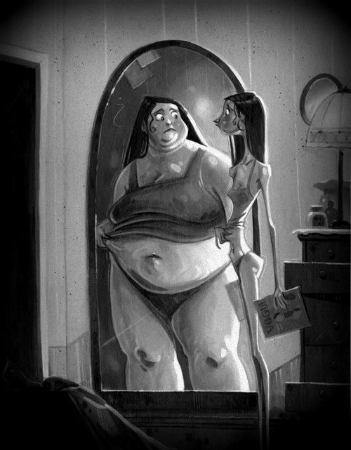

ZABURZENIA ODŻYWIANIA:
Poniższa strona powstała z potrzeby serca. Od 2011 roku pracuję z osobami zmagającymi się z zaburzeniami odżywiania, ich rodzinami i bliskimi. Z moich doświadczeń wynika, że wciąż brakuje miejsc, w których wszystkie te osoby (zarówno chorujące jak i ich bliscy) mogłyby znaleźć zrozumienie. Chciałabym żeby ta strona była odpowiedzią na potrzeby wszystkich tych osób. Bez oskarżeń, przerzucania odpowiedzialności, bez szukania winnego. To miejsce, w których chorzy znajdą nadzieję a ich bliscy podpowiedzi, jak zrozumieć często irracjonalne zachowania osób zmagających się z zaburzeniami odżywiania.
OSOBY CHORE NA ZABURZENIA ODŻYWIANIA:
Odżywianie jest jedną z najbardziej podstawowych potrzeb fizjologicznych. Dla większości ludzi jest to czynność oczywista i automatyczna – jak oddychanie czy spanie. Są jednak osoby, które mimo dostępu do jedzenia, mają trudności z rozpoznawaniem, odczuwaniem i adekwatnym zaspokajaniem potrzeb pokarmowych. Jeżeli wymienione problemy nie wynikają z innych schorzeń, mówimy o zaburzeniach odżywiania. Chociaż na pierwszy rzut oka kłopotliwe wydają się zachowania związane z jedzeniem, problem dotyczy przede wszystkim sfery emocjonalnej. Dla osób cierpiących na zaburzenia odżywiania jedzenie zyskuje wymiar symboliczny – może być sposobem na regulowanie nastroju (nagradzanie siebie, bądź karanie), narzędziem do radzenia sobie z nieprzyjemnymi uczuciami, wyrazem chęci niszczenia siebie. W przypadku każdej osoby zespół występujących u niej objawów należy rozpatrywać i interpretować indywidualnie.
Zaburzenia odżywiania uznawane są w klasyfikacjach medycznych za chorobę. Wbrew społecznym stereotypom nie są wymysłem ani fanaberią. By wyzdrowieć nie wystarczy silna wola – podobnie jak w przypadku innych chorób, zaburzenia odżywiania wymagają profesjonalnego leczenia. Bagatelizowane prowadzą do poważnych konsekwencji – fizycznych i psychicznych. Warto to podkreślić, ponieważ osoby chore często doświadczają wstydu i poczucia winy w związku z występującymi objawami. Dodatkowo przeżywają konflikt wewnętrzny dotyczący leczenia – z jednej strony są zmęczone objawami choroby, z drugiej strony są przywiązane do choroby, ponieważ daje im narzędzia do radzenia sobie z napięciem emocjonalnym. Niestety są to narzędzia destrukcyjne, które coraz bardziej wyniszczają organizm i często izolują od ludzi. Pamiętaj, że nie masz wpływu na pojawienie się zaburzeń odżywiania. Jednak od Ciebie zależy, czy podejmiesz próbę leczenia!
Wyróżnia się cztery podstawowe rodzaje zaburzeń odżywiania: anoreksję, bulimię, kompulsywne objadanie się oraz atypowe zaburzenia odżywiania. Każdy rodzaj schorzenia ma inną charakterystykę, obraz kliniczny i przebieg. Zaburzenia mogą płynnie przechodzić z jednego w drugie. Mają zróżnicowane, wieloczynnikowe podłoże. Najbardziej efektywną formą leczenia jest psychoterapia. Czasem niezbędne jest również włączenie leczenia farmakologicznego a w skrajnych sytuacjach hospitalizacja.
Jeżeli ktoś z Twoich bliskich choruje a Ty nie wiesz jak się w tym odnaleźć, zapraszam na konsultacje psychoedukacyjną. To spotkanie, w czasie którego będziesz mógł uzyskać odpowiedzi na pytania związane ze specyfiką zaburzeń odżywiania i dowiedzieć się jak mądrze wspierać osobę chorą oraz zadbać o siebie w tej sytuacji. Cena: 100 zł/50 minut
Cyklicznie organizuję spotkania grupowe dla bliskich osób z zaburzeniami odżywiania. Podczas spotkań można korzystać nie tylko z wiedzy prowadzących, ale również usłyszeć jak inni radzą sobie w podobnej sytuacji. Informacje na temat najbliższego spotkania będą zamieszczane w dziale „Aktualności” i „Warsztaty” na stronie.
BLISCY OSÓB CHORYCH:
Życie z osobą chorą na zaburzenia odżywiania niesie za sobą wiele pytań. W zależności od rodzaju relacji jaki nas łączy z taką osobą, możemy borykać się z różnymi wątpliwościami. Rodzice, rodzeństwo, partnerzy czy przyjaciele często chcą pomóc, ale nie wiedzą jak. Dla wielu z nich zaburzenia odżywiania są trudne do zrozumienia, nie wiedzą co kieruje osobą chorą i jak w związku z tym powinny się zachowywać. Patrzenie na kogoś bliskiego kto się zabija jest trudne i budzi wiele silnych uczuć. Jak sobie z tym radzić? Nierzadko w takich sytuacjach dochodzi do nieporozumień i kłótni, które zamiast pomagać, dodatkowo obciążają osoby chore i ich bliskich. Czasem bliscy w przejawie troski zaczynają kontrolować osoby chore, rozliczają je ze zjadanych posiłków, co najczęściej przynosi odwrotny skutek do zamierzonego. W związkach z osobą chorą na zaburzenia odżywiania często można zaobserwować mechanizm współuzależnienia, który nie tylko nie pomaga, ale i utrudnia proces leczenia.